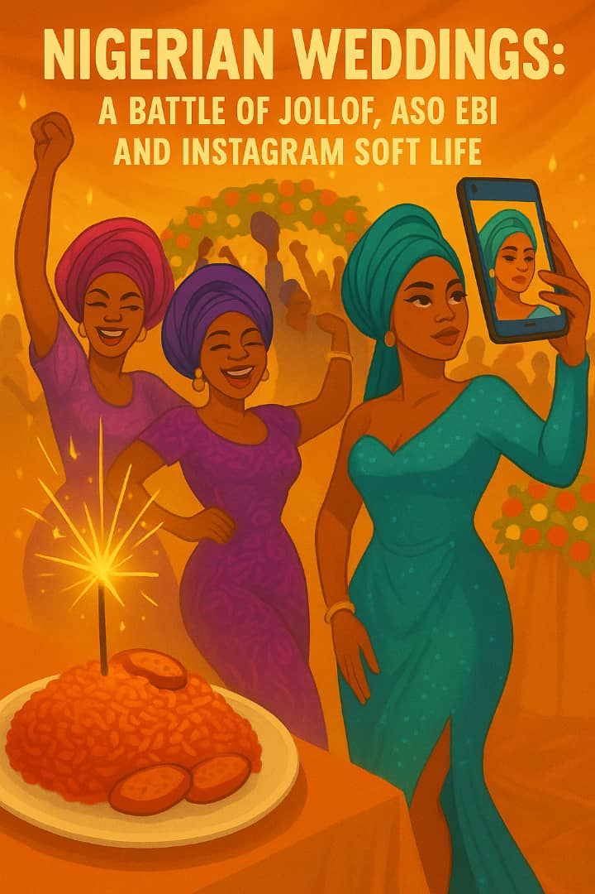

July 2025 • By Frank Okoye
Love is sweet but wedding planning in Nigeria is a spiritual warfare...
If you have not been emotionally blackmailed into buying Aso Ebi...
You sit under a canopy for 4 crazy hours...
Every bride wants her wedding to break the internet...
If you are marrying into a Southern Nigerian family...
You think you are living large. You spray money in slow motion...
Let us not ignore the side hustle going on at receptions...
Most couples are going broke to impress people they won’t speak to again...
Nigerian weddings are beautiful, loud, rich in culture...